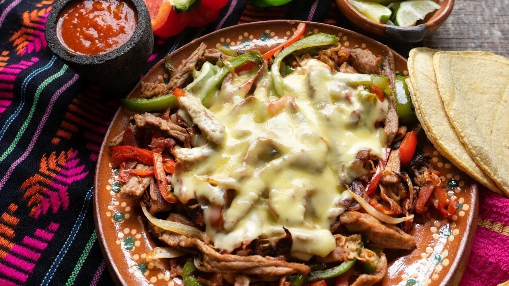

Alambre de res

Description
This is a mexican taco accompaniment. It origin was the meat skewers which has meat, onion and pepper on a stick
Ingredients
For four people
- 500 gr strip beef fillet steaks
- 1 white onion filleted
- 1 Julienne green pepper
- 150 gr diced bacon
- 1 Manchego or Oaxaca cheese, to gratin
- 1 teaspoon of worcestershire sauce
- vegetable oil
Steps
- A couple of minutes or maximum an hour before, we can marinate the meat with a little lemon, salt and Worcestershire sauce. Cook the cubes of meat with a little oil and reserve.
- In a large, wide pan, roast the onion with a little oil. As soon as it begins to turn transparent, add the pepper with the bacon.
- As soon as the vegetables begin to brown, add the meat cut into pieces and cook for a few more minutes, after seasoning and seasoning with a little Worcestershire sauce.
- At the end we add the grated cheese on top of our preparation and let it gratin with the lid on and low heat.
- Once it is ready, we serve the wire on a plate in the center of the table, heat corn or flour tortillas and serve in tacos. Bon Appetite!